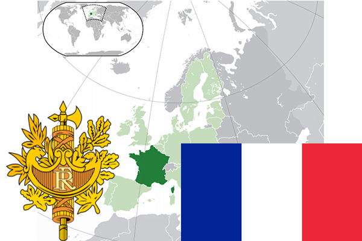

To`liq nomi: Fransiya Respublikasi
Region: G`arbiy Yevropa
Qonunchilik shakli: Respublika
Asos solingan: 4- oktabr 1958-yil Fransiya Respublikasiga asos solingan
Poytaxt: Parij
Maydoni: 674 685 km² (dunyoda 48 -o`rinda )
Chegaradosh davlatlari: Belgiya, Lyuksemburg, Germaniya, Shveysariya, Italiya, Monako, Ispaniya, Andorra
Aholisi: 66 991 000 (dunyoda 21 - o`rinda, 2017 -yil roʻyxat)
Aholi zichligi: 103 /km²
Aholining o`rtacha yoshi: 81,0 yil ( 84,1 ayollar, 77,7 erkaklar)
Rasmiy tili: fransuz tili
Dini: 48% katolik, 15% protestant, 1,3% iudist, 4,5% musulmon
Pul birligi: Yevro
Telefon prefiksi: +33
Internet domen: .fr
Xalqaro tashkilotlarga a`zoligi: BMT (1945 – yildan), Katta Yettilik, Yevropa Ittifoqi (1957-yildan), Shimoliy Atlantika shartnomasi
Dengiz va okeanlarga chiqishi: Atlantika okeani, Shimoliy, O`rtayer dengizi
YIM: Butun: $ 2,739 trln , Jon boshiga: $ 43 000 (2008 - yil roʻyxati)
Yirik shaharlari: Parij, Marsel, Lion, Tuluza, Nitsa